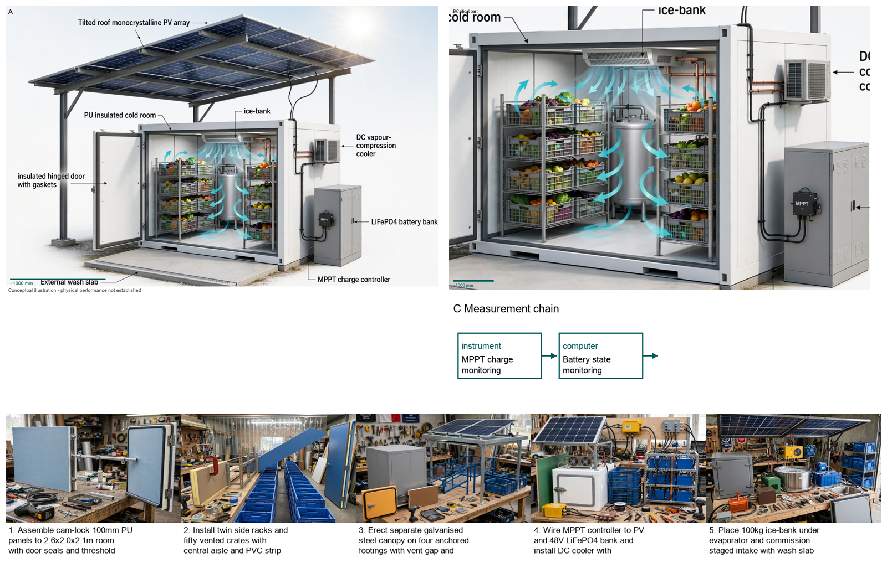

Hardware Scientist — three problems, three concepts
Stair-climbing hand truck for parcel couriers
Twin fixed R95 tri-stars with six 100mm wheels maintain two-nosing contact to bridge 170R/280G stairs while the vertical 60x40x4 6061-T6 spine carries the bending moment and the CSK30 clutch plus R60 deadman disc holds 38.5Nm/405N then meters descent to 40.5N, with only H1 handle and H2 toe folding to 850x550x260 standing stow.
The problem
Stair-climbing hand truck for parcel couriers

Final concept figure — click to enlarge.
Three decisive choices
- FIXED twin R95 tri-stars with 6x100mm wheels for two-nosing contact on 170R/280G with 220R out-of-scope
- SINGLE vertical 60x40x4 spine with full-perimeter 4mm ER5356 plus gusset and HAZ 25mm off peak stress
- CSK30 110Nm SF2.86 plus R60 deadman disc to hold 38.5Nm/405N then meter to 40.5N with sealed 2RS
Evolution
Full report · Whiteboard replay · Reference list · Dossier
Off-grid solar-powered cold storage for smallholder farmers
Sunlight on a tilted 4kW PV array with MPPT charges a 48V LiFePO4 bank that drives a DC vapour-compression cooler to hold a 100mm PU-insulated 10m3 room with twin racks of fifty vented crates at 4-6C, with a 100kg ice-bank carrying night load.
The problem
Off-grid solar-powered cold storage for smallholder farmers

Final concept figure — click to enlarge.
Three decisive choices
- Retain 100mm PU cold room with vented PV shade roof and tight door seals
- Stage intake at 250kg per day over 4 days with 1.5kW cooling 0.6kW electric compressor duty
- Size 4kW tilted south PV with MPPT plus 48V 240Ah LiFePO4 near 11.25kWh plus 100kg ice-bank for night
Evolution
Full report · Whiteboard replay · Reference list · Dossier
Vibration retrofit for a lively pedestrian footbridge
Twin 250-kg masses on coil springs with viscous dampers hung at the midspan antinode resonate at 1.81 Hz to absorb the 1.9 Hz bending-mode energy, raising effective damping to 9.44% and cutting crowd acceleration to 0.74 m/s2.
The problem
Vibration retrofit for a lively pedestrian footbridge

Final concept figure — click to enlarge.
Three decisive choices
- Place twin 250kg units for 5% mass ratio at midspan antinode tuned to 1.81 Hz with 13.36% damper damping per Den Hartog optimum
- Hang units below soffit on transverse SHS clamp beams U-bolted to existing cross-girders with zero hardware above deck
- Accept CL2 0.74 m/s2 with 9.44% effective damping and 20.0 mm travel as retrofit comfort outcome